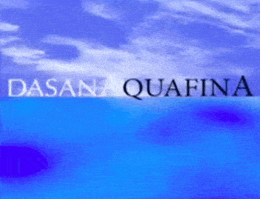

XXII.
Questions Arise about TMB Student Safety Following Bouncing! “Sport” Accident

When I was a young person, I was fascinated by rockets. What made them suddenly jettison up to the heavens? It must be the BOOM-BOOM fire explosion, right?
Yes and no.
As students should learn in school, the propulsion caused by rockets is not specifically unique to exothermic chemical reactions: it is part of a general phenomenon aptly described by Newton’s Third Law of Motion: for every action, there is an equal and opposite reaction.
When the exothermic chemical reaction inside the rocket sends atoms (in gas form) downward with great force, there is an accompanying force sending the rocket upward. Both forces are equal, but opposite in direction.
But a fiery explosion is not necessary.
When I was a young person, my Skout troupe hosted a scientific magician who had a two-liter bottle of soda, which was filled halfway with ordinary water. He plugged the bottle with a cork, before stabbing it with the needle used to inflate footballs. Then he connected it to a bike pump and had me start pumping. Bubbles of air ripped through the water as I pumped. And it got harder and harder to pump, until suddenly, before I saw what was happening…
WHOOSH! The bottle rocketed up the heavens, shooting out a stream of cold water down on everyone below.
Ordinary water and ordinary air.
Thus, I understand the appeal behind a new “sport” called Bouncing™ that’s been invented by BeaverCreek OIHO students who attend the notorious giftedCharterSkool called Traveling Mouth Band University. The sports involves a lot of song-and-dance-and-costumes, but the real magic is simple: if someone takes a full 2-liter unopened bottle of soda and slams it down perfectly on the plastic cap, the plastic cap will break, and the pressurized soda will rush out downward with great force.

And thus, there will be a force of equal magnitude going in the opposite direction.
WHOOSH!
But here’s the problem: while my rocketeering adventures were supervised by a trained adult, this “sport” of Bouncing™ is supervised by none.
That’s right: none.
And when teenagers are left unsupervised by any adults, for hours and hours, something dangerous and damaging inevitably happens.
At approximately 17:22 last Friday, a two-liter bottle was “bounced” and sent a 2-liter bottle full of kinetic energy rocketing horizontally. According to eye-witness reports, the object possessing great momentum barely missed the head of a young student who attends BCEC and ended up smashing a window, before it continued on its path and broke a bookshelf.
It could have been a lot worse.
While individual criminal charges are being applied, the greater Miami Valley Area community has to ask ourselves: how long will we tolerate this special status toward TMB™ students? Throughout normal skool days, students are watched over by adults with professional college degrees or, at the very least, supervised by well-meaning adults in registered homeskools.
But with students who “attend” Traveling Mouth Band University, there are no adults in the local area assigned to keep tabs on their activities. Theoretically, there are supervising adults somewhere, but according to a recent report by CUPNEWS™, one adult is supposed to supervise 150 different creekstreams occurring at any given moment.

Thus, TMB “faculty” rely on algorithms and artificial intelligence to bring attention to problematic behaviours. And, as we have seen here, human behaviour is too complex for non-sentient creatures to be expected to distinguish what behaviour is or is not “problematic”.
(Story continued on C14, below fold)
FWF Champion, Dead Man Douglas, visits Yoo’s Extradimensional Wave Transmitter
(CP Wire) FWF Heavyweight Champion Dead Man Douglas, who is participating in a 40-event two-lunar-rotation tour across the nation of Nippon, took a break from his busy schedule to marvel in person at the esoteric scientific device known as the Extradimensional Wave Transmitter. The Extradimensional Wave Transmitter was created by Dr. Takawa Yoo and has created great controversy due to a recent Artificial Intelligence analysis (led by Dr. Yoo) that suggests it has successfully communicated with alien lifeforms.
Following his visit to the Dr. Yoo’s laboratory, the FWF Heavyweight Champion called friend and former colleague, FS Executive Leader James Vincenza, where it is reported that the professional wrestler declared the Extradimensional Wave Transmitter to be “the real deal”.
Douglas announced that he has donated “a significant sum of monies” to Dr. Yoo’s scientific pursuits, whilst FSEL Vincenza twit-ticked that he is increasing the federal budget for interdimensional communication efforts. ###